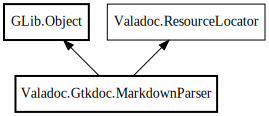

MarkdownParser
Object Hierarchy:

Description:
public class MarkdownParser :
Object,
ResourceLocator
Content:
Creation methods:
Methods:
- private Comment? _parse (SourceComment comment)
- private Taglet? _parse_block_taglet (SourceComment comment, string taglet_name)
- private Note? _parse_note (SourceComment comment)
- private void add_content_string (string str)
- private void add_note (ref Comment? comment, Note? note)
- private void add_symbol_link (string symbol, bool accept_plural)
- private void add_taglet (ref Comment? comment, Taglet? taglet)
- private void add_text (Token token) throws ParserError
- private void add_value (Token token) throws ParserError
- private inline string fix_resource_path (string path)
- public void init_rules ()
- private void inline_to_string (Inline element, string rule_name, StringBuilder? builder) throws Error
- private bool is_error_parameter (string name)
- private bool is_literal (string str)
- public Comment? parse (Node element, GirSourceComment gir_comment, GirMetaData metadata, InternalIdRegistrar id_registrar, string? this_name = null)
- private Object peek (int offset = -1)
- private Object pop ()
- private string pop_preserved_link ()
- private string pop_preserved_path ()
- private void preserve_token (Token token) throws ParserError
- private void push (Object element)
- public string resolve (string path)
- private inline string run_to_string (Run run, string rule_name) throws Error
Fields:
Inherited Members:
All known members inherited from class GLib.Object
All known members inherited from interface Valadoc.ResourceLocator